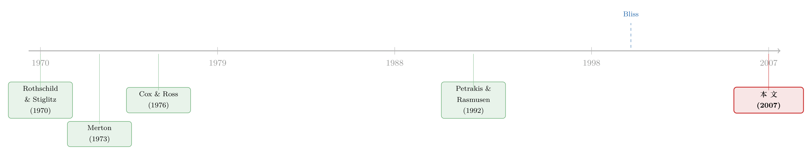

「风险让期权更值钱」——这句人人会说的话，其实只对了一半
本文读的是 Rasmusen (2007, Review of Financial Studies)：金融学里那句"风险越大、期权越值钱"的口头禅，严格来说是错的——它只能保证期权价值"不下降"。作者用两个新的"更有风险"的定义把这件事说清楚：要让期权价值对所有执行价都严格上升，"极值更有风险（extremum riskier）"是必要条件，"逐点更有风险（pointwise riskier）"是充分条件。
1 一句被说了五十年的"错话"
先做一道送分题。手里握着一份看涨期权（call option），标的资产越"波动"，你是该高兴还是该担心？
几乎所有人——包括写教科书的人——都会脱口而出：当然高兴。波动越大，标的价格冲到执行价之上的概率就越大，而期权持有者只在乎"上面"那一截，下面跌得再惨，损失也封顶在权利金上。Copeland 和 Weston 那本经典教材就是这么写的：
"看涨期权的持有者偏好股价有更大的方差。方差越大，股价超过执行价的概率就越大，这对期权持有者是有价值的。"
这话听起来天经地义，连专家在闲聊和讲义里都这么说。但它不对。
作者举了一个极朴素的反例。执行价 $50，当前价 $40。现在我们让资产"变得更有风险"：把价格落在 $10–$15 和 $45–$49 这两段的概率调高，同时把落在 $38–$42 的概率调低。从任何常识看，这个资产都"更波动"了——方差更大、尾巴更肥。可看涨期权的价值呢？纹丝不动。 因为执行价 $50 以上的概率分布根本没动，而期权只认那一段。
于是我们陷入一个尴尬：
- 说"风险增加会提高期权价值"——有意思，但不严格成立；
- 说"风险增加不会降低期权价值"——严格成立，但毫无意思。
第二句有多空洞？作者讽刺得很到位：你同样可以说"期权价值不会随财富下降"、"不会随失业率下降"、甚至"不会随 Bloomington 镇的气温下降"——因为这些变量压根不进模型。把一个真正的金融直觉，退化成这种"什么都不会让它变差"的废话，未免太可惜。
这篇论文要做的事，自始至终只有一件：把"风险让期权更值钱"这句口头禅，修成一个既有意思又严格为真的命题。它不研究新的随机过程，不做实证，就是把金融理论里一块最基础、却被所有人含糊带过的砖，重新砌齐。
2 模型：把"期权价值"写成离散概率上的求和
要把话说严谨，先要有一个最干净的框架。
设资产在终期取值为 \(x_i\)，概率为 \(f(x_i)\)，支撑点按大小排好：\(x_1 < x_2 < \cdots < x_m\)。看涨期权赋予持有者在终期以执行价 \(p\) 买入资产的权利，且我们约定 \(x_1 < p < x_m\)——这是为了排除掉那些"永远会行权"或"永远不行权"的无风险期权（执行价低于 \(x_1\) 或高于 \(x_m\) 的情形）。记 \(\beta\) 为贴现因子（终期一美元的现值）。那么看涨期权的现值是：
把那个 \(\max\) 展开，只剩高于执行价的点真正贡献价值：
$$V_{call}(f,p)=\beta \sum_{i=j}^{m} f(x_i)(x_i-p),\qquad j:\ x_{j-1} 对称地，看跌期权（put option）只认"下面那一截"： $$V_{put}(f,p)=\beta \sum_{i=1}^{j-1} f(x_i)(p-x_i),\qquad j:\ x_{j-1} 这里有两个值得停一下的建模选择。其一，模型只有两个时点（当下与终期），因此讨论的是不能提前行权的欧式期权（European option）。为什么不要美式？因为美式期权的提前行权（比如为吃股息提前行使看涨、或深度实值看跌为了再投资而提前行使）恰恰发生在"期权价值"不再由未来价格分布决定的时候——那时小幅的风险变化无关紧要，而本文偏偏要追问"严格上升还是仅仅不下降"，所以必须把提前行权排除掉。其二，作者还排除了那种"区间型"的奇异期权（比如"价格落在 [3,5.6] 或 [7,26] 时才能买"），因为对这类期权，把概率从两端挪回中间反而可能提高其价值——直觉和命题都不适用。 现在轮到"风险"本身怎么定义。 传统答案是 均值保持展宽（mean-preserving spread, MPS）。作者用的是 Petrakis and Rasmusen (1992) 的三点版本（而非 Rothschild and Stiglitz (1970) 的四点版本，两者等价，但三点更简洁）。所谓一次展宽，就是找三个点 \(y_1 $$s(y_1)y_1+s(y_2)y_2+s(y_3)y_3=0 \quad(\text{均值不变}), \tag{4}$$
$$s(y_1)+s(y_2)+s(y_3)=0 \quad(\text{概率增量和为零}), \tag{5}$$
$$s(y_1)>0,\quad s(y_2)<0,\quad s(y_3)>0 \quad(\text{把概率从中间挪向两端}). \tag{6}$$ 定义（风险）：若 \(g\) 可由 \(f\) 经过一系列均值保持展宽得到，就说 \(g\) 比 \(f\) "更有风险"。这套定义之所以经典，是因为它等价于"资产对任何风险厌恶者（凹效用）都更不具吸引力"，也就是"\(f\) 像是 \(g\) 加了噪声"。 一个关键的提醒：方差变大 ≠ 更有风险。作者举了个反例：弱凹效用 \(U=x\)（\(x\le 10\)）、\(U=10+\tfrac{x}{2}\)（\(x\ge 10\)）下，把分布从 \(f:(0.8:7,\,0.2:12)\) 换成 \(g:(0.2:0,\,0.8:10)\)，均值都是 8，方差却从 4 涨到 16，效用反而从 7.8 升到 8.0。也就是说方差升高了，资产却变得更吸引人。Bliss (2000) 早就强调过：在期权语境里要用 MPS 这个偏序，而不是简单用方差，因为期权价值不会随方差单调变化。 有了这套语言，金融学最基础的命题之一就可以精确陈述了： 命题 1（Merton (1973) 定理 8）：若 \(g\) 比 \(f\) 更有风险，则对任意 \(p\)，\(V_{call}(g,p)\ge V_{call}(f,p)\) 且 \(V_{put}(g,p)\ge V_{put}(f,p)\)。 注意是 \(\ge\)，弱不等式。证明的精髓只需看一次展宽（其余由归纳法递推）。先把两条由 (4)(5) 推出的"零"加进来，得到一个后面反复要用的恒等式： $$\sum_{i=1}^{3} s(y_i)(y_i-p)=\sum_{i=1}^{3} s(y_i)(p-y_i)=0. \tag{9}$$ 接着按执行价 \(p\) 落在哪里分三种情形。真正关键的一步在于情形 (iii)：当 \(p\in(y_1,y_3)\)，看涨期权价值的变化可以写成 $$V_{call}(g,p)-V_{call}(f,p)=\beta\{\,0+s(y_2)\max(y_2-p,0)+s(y_3)(y_3-p)\,\}. \tag{12}$$ 最后一项 \(s(y_3)(y_3-p)\) 必为正（\(s(y_3)>0\) 且 \(y_3>p\)）；中间项要么是零、要么是负（若 \(y_2>p\)，因 \(s(y_2)<0\)）。而 (9) 告诉我们三项加总为零，又因 \(y_1 这就把第一节那个反例的本质说穿了：MPS 保证不下降，但展宽如果都发生在执行价的同一侧，期权价值就可以纹丝不动。所以下面这条命题是假的—— 命题 1a（假）：若 \(g\) 比 \(f\) 更有风险，则对任意执行价 \(p\)，\(V_{call}(g,p)>V_{call}(f,p)\)。 作者用一个图就把它证伪了：执行价 4.5，造一对 \(g\) 比 \(f\) 更有风险、但所有大于 4.5 的取值概率都没变的分布，于是 \(V_{call}(f,4.5)=V_{call}(g,4.5)\)。命题 1 与 1a 只差一个不等号的强弱，而这一点之差，就是"有意思"与"无意思"的分水岭。 退一步能救回多少？作者给出命题 1b：若 \(g\) 比 \(f\) 更有风险，则存在某个执行价 \(p'\) 使期权严格更值钱，且不存在任何执行价让它更便宜。证明是命题 1 情形 (iii) 的直接推论——从某个展宽的 \((y_1,y_3)\) 里随便挑一个 \(p'\) 就行。这一步很简单，却值得记下：风险增加，至少对某些执行价确实严格抬高了期权价值。 但"某些执行价"还是不够漂亮。我们真正想要的，是一个能让"对所有执行价都严格上升"成立的风险定义。 于是反转出现了。作者换个方向：与其修命题，不如修"风险"的定义，找到一种"更有风险"，让类似命题 1a 的强结论真正成立。 定义 2（逐点更有风险，pointwise riskier）：\(g\) 与 \(f\) 均值相同，且存在 \(\underline{x},\overline{x}\in(x_1,x_m)\) 使得 一句话：把中间每一个点的概率都抽走，给两端每一个点都添上（均值不变）。它继承了 MPS"从中间挪向两端"的精神，但要求"每一个"点都动，因此比标准风险更强——逐点更有风险一定更有风险，反之不然。注意它不要求关于均值对称，也允许 \(g\) 把概率添到 \(f\) 支撑之外的更极端处。对连续分布，它意味着 \(f\) 与 \(g\) 的密度恰好交叉两次。 定义 3（极值更有风险，extremum riskier）：用累积分布表述， $$G(x_1+\epsilon)>F(x_1+\epsilon)\quad\text{且}\quad G(x_m-\epsilon) 在离散情形它的含义很直白：(i) 要么 \(f(x_1) 为什么连续分布里必须用累积分布 \(F,G\) 而不能用密度？因为连续密度下每个极值点本身概率为零，要改变期权价值，必须改变 \(f\) 支撑上一整段区间的概率，而非单点。这是个容易被忽略、却很要紧的技术细节。 现在把两个定义和期权价值挂钩，这就是全文的落点。 必要条件（命题 2）：要使"对任意执行价 \(p\) 都有 \(V_{call}(g,p)>V_{call}(f,p)\)"成立，必要条件是 \(g\) 比 \(f\) 极值更有风险（看跌同理）。 证明的骨架很巧。既然要对所有执行价都成立，那就一定得对最靠两端的 \(p=x_m-\epsilon\) 和 \(p=x_1+\epsilon\) 成立。先看 \(p=x_m-\epsilon\)，把差值整理后会冒出这样一个表达式： $$\left(\Big[\,g(x_m)+\sum_{i=j}^{n} g(x_i)\,\Big]-f(x_m)\right)(\epsilon)>0, \tag{15}$$ 注意到 \(f(x_m)=1-F(x_m-\epsilon)\)、而方括号内恰是 \(1-G(x_m-\epsilon)\)，于是这个不等式成立当且仅当 \(F(x_m-\epsilon)>G(x_m-\epsilon)\)——正是定义 3 的第一个条件。再看 \(p=x_1+\epsilon\)，同样的代数会逼出 \(F(x_1+\epsilon) 充分条件：若 \(g\) 比 \(f\) 逐点更有风险，则对所有执行价 \(p\)，每一份看涨/看跌期权都严格更值钱。逐点更有风险足够强——它保证两端每个点都增重、中间每个点都减重，于是无论执行价切在哪里，"上面那一截"（或看跌的"下面那一截"）的概率质量都被真实地推高了。 但充分不必要。作者用图里的分布 \(h(x)\) 说明：\(h\) 并非逐点更有风险，可 \(V_{call}(h,p)>V_{call}(f,p)\) 对所有 \(p\) 依然成立。换句话说，逐点更有风险是一张"足够好用但偏紧"的门票。两个定义之间还隔着一层有趣的关系：逐点更有风险与严格二阶随机占优（strict second-order stochastic dominance, SSOSD）都能用"分布交叉有限次"刻画，看着像，其实不同——作者构造了一个均匀分布的例子，\(G\) 逐点比 \(F\) 更有风险，却因为 \(DF(3)=DG(3)\) 而不满足 \(F\) 严格二阶占优 \(G\)。 至此，那句口头禅终于被修齐了： 这条线索的源头有两支。一支是风险的度量：Rothschild and Stiglitz (1970) 用均值保持展宽给"更有风险"下了经典定义，把它和风险厌恶者的偏好对应起来；Petrakis and Rasmusen (1992) 提出更简洁的三点展宽（本文用的就是它）。另一支是期权对风险的反应：Merton (1973) 的"理性期权定价理论"给出定理 8，即期权价值弱增于风险——这正是本文要"修齐"的那块砖；其后 Black and Scholes (1973) 与 Cox and Ross (1976) 等沿着具体随机过程（扩散、跳跃）的路线走下去，而非像 Merton 那样研究终值的一般分布。  到了 Bliss (2000)，问题被尖锐地点了出来：要得到一个严格命题，一个充分条件是标的服从正态、对数正态这类双参数分布——但期权价值与风险的关系，显然在远比这一般的分布上也成立。本文 Rasmusen (2007) 正坐落在这个缺口上：不假设正态、不研究价值如何随时间缓慢演化，而是回到 Merton 式的"一般终值分布"问题，给出充分（逐点）与必要（极值）两侧的精确刻画。它在实践上最有用的地方，恰是那些不愿假设正态、又把期权价值嵌进更大决策模型的领域——比如 Dixit and Pindyck (1994) 的实物期权、Arrow and Fischer (1974) 的环境不可逆性、乃至 Weitzman (1979) 的搜寻理论。 （顺带一提，从期权价格反推标的分布、再谈风险如何进入价格，是个相邻而热闹的话题，可参见《把未来的概率从期权价格里"读"出来》。） Q：这篇文章既没有数据也没有新模型，凭什么发在 RFS？ 它的贡献是"概念性"的：把金融学最基础、却被所有人含糊处理的一个命题（"风险↑→期权↑"）从"弱不等式"精确化为"充分/必要"两侧的刻画。这类"整理地基"的工作价值不在新结果，而在让后续凡是不愿假设正态的应用（实物期权、搜寻、环境经济学）有一组干净、可直接引用的假设。 Q："逐点更有风险"和"均值保持展宽"到底差在哪？ MPS 只要求"从中间挪向两端"的净效果，允许某些点不动甚至中间某些点增重，只要整体可由一连串三点展宽达到。逐点更有风险要求每一个中间点都减重、每一个两端点都增重。所以前者是偏序（很多分布对无法排序），后者是更强、更"整齐"的要求；逐点更有风险一定更有风险，反之不成立。 Q：为什么"必要"用极值、"充分"用逐点，不能统一成一个定义？ 因为期权价值对所有执行价严格上升，是一组（随执行价变化的）不等式同时成立。卡在最两端的执行价只需要两端概率增加（极值更有风险，必要）；而要保证中间任意执行价也严格上升，则需要中间到两端的概率全面重排（逐点更有风险，充分）。必要与充分之间确实存在真空地带——图中的 \(h(x)\) 就活在那里。 Q：方差更大为什么不等于更有风险？这不反直觉吗？ 反直觉，但作者的反例很硬：存在弱凹效用与一对同均值分布，使方差从 4 升到 16，风险厌恶者的效用却上升，对应的看涨期权价值还可能下降（\(V_{call}(f,11)=0.2\) 而 \(V_{call}(g,11)=0\)）。峰度同样不可靠。所以"方差"不是刻画期权-风险关系的正确尺子，MPS 偏序才是。 Q：把"风险随时间增加"换成"到期日变长"，结论还成立吗？ 通常成立。随着到期日变长，标的终值的离散度一般也变大，于是"期权价值是否随风险严格上升"就等价于"是否随到期日严格上升"。但有例外：若是实物期权、且不确定性在某个日期一次性揭晓，则风险不随时间增加，反而到揭晓后归零——此时本文命题就不直接适用。 Q：为什么非得是欧式期权？ 因为本文要区分的是"严格上升"还是"仅仅不下降"，而美式期权的提前行权恰好发生在期权价值不由未来价格分布决定的时候（如为吃股息提前行使看涨）——那时小幅风险变化本就无关紧要，把这个边角排除掉，问题才干净。 1. 把"极值/逐点更有风险"搬到信用风险里 【经济故事】公司债的偿付本质上是一份对公司资产的看跌期权（默顿式结构模型）。债权人关心的"下尾"概率，恰是本文"极值更有风险"刻画的对象。一个自然问题：当资产分布在尾部变厚（而非简单方差变大）时，信用利差是否严格走阔？这能把"利差对波动率的敏感性"重新建立在正确的风险度量上。
【可行性】中。结构模型可解析推导；实证上需要从期权或 CDS 隐含分布里识别"尾部概率"的变化，数据（OptionMetrics、CDS 报价）可得，但把"极值更有风险"做成可检验的实证量需要额外设计。 2. 外资进入是否改变了标的的"逐点风险"形状 【经济故事】外资持有人涌入一国债市/股市，常被认为"增加波动"，但本文提醒：要紧的不是方差，而是概率质量如何在中间与两端重排。外资是否让收益分布"逐点更有风险"（两端全面增重），还是只在某一侧堆积？这决定了本地期权与可转债的定价方向。
【可行性】中。可用开放度自然实验（如 MSCI 纳入、QFII 额度放开）作冲击，配合期权隐含分布的前后对比。识别难点在于把"分布形状变化"与"水平移动"分开。 3. 用本文定义重做"波动率微笑"的比较静态 【经济故事】隐含波动率曲面随时间变形，常被笼统称作"风险变了"。若用"逐点 / 极值更有风险"作为更细的尺子，能否预测微笑两翼的哪一侧、在多大执行价范围上严格抬升？这给"哪种风险变化驱动了微笑形变"一个可检验的命题。
【可行性】高。OptionMetrics 隐含分布数据成熟，本文定义可直接转译成对累积分布 \(G\) 与 \(F\) 的不等式检验，几乎是"拿来即用"。 4. 实物期权里的"严格"与"不下降"之别有没有现实代价 【经济故事】实物期权理论（Dixit-Pindyck）里，不确定性上升常被默认会提高等待的期权价值。但若不确定性的增加只发生在执行价同一侧（非极值更有风险），企业的最优投资门槛可能纹丝不动。识别这种"无效的不确定性上升"，对解释企业为何对某些冲击毫无反应很有价值。
【可行性】中偏低。理论清晰，但实证上要观测项目价值分布的形状变化极难，多半只能在结构估计或校准框架里做。 本文最大的贡献，是把一个"人人会说、却很少有人说对"的基础命题彻底说清楚：它不证明新东西，而是把旧砖砌齐，给出充分（逐点更有风险）与必要（极值更有风险）两侧的精确边界，并诚实地指出二者之间存在真空。这种"整理地基"的工作，受益者是所有不愿假设正态分布的应用领域。 要说担忧，主要有两点。其一，文章完全是离散、两时点、风险中性的设定，把提前行权、奇异期权、时间演化都排除在外——这让命题干净，却也意味着它离实证还隔着好几步，"极值/逐点更有风险"如何变成可估计、可检验的量，作者并未涉及。其二，充分与必要之间的真空地带（图中 \(h(x)\)）说明，本文给的不是"充要"刻画；后续若能找到既必要又充分、且仍然好用的定义，这块地基才算彻底夯实——但正如作者引用 Gollier (1995) 时所暗示的，那样的定义往往复杂到难以应用。我接下来最想看到的，是有人把这套定义搬进信用市场或波动率曲面，让它从一条优雅的命题，长成一把能量出真实世界的尺子。3 旧定义下的真相：Merton 的定理只能给你"弱不等式"
4 两个新定义：一个必要，一个充分
5 核心结果：必要靠"极值"，充分靠"逐点"
6 文献脉络
7 评论与延伸（Q&A + 研究方向）
(a) 几个可能的疑问
(b) 几个可能的研究问题与提案
8 参考文献